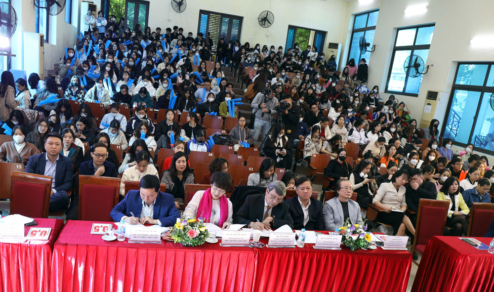
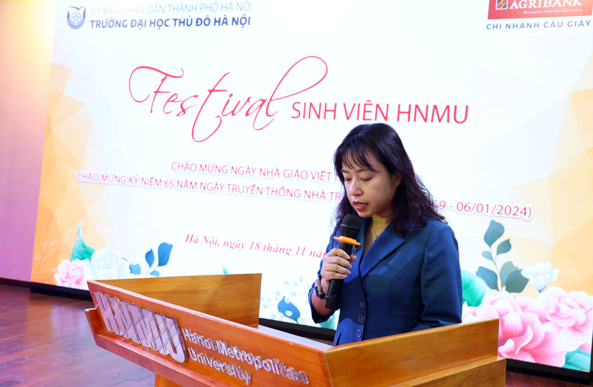
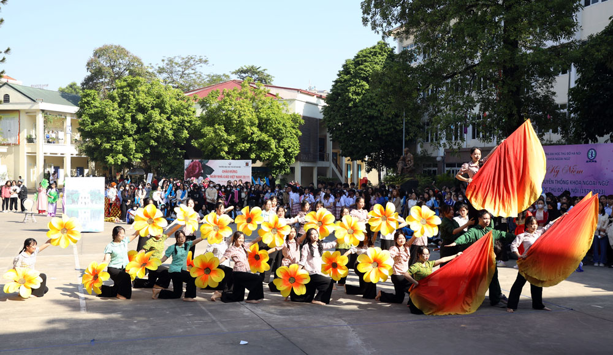
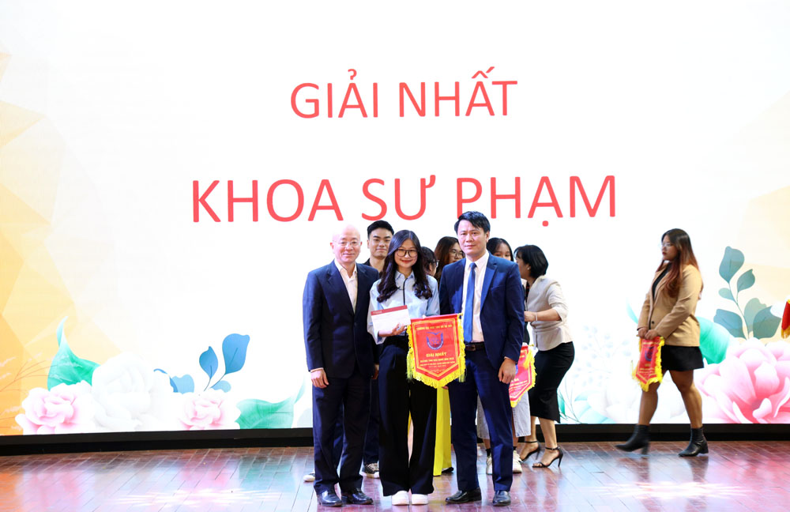
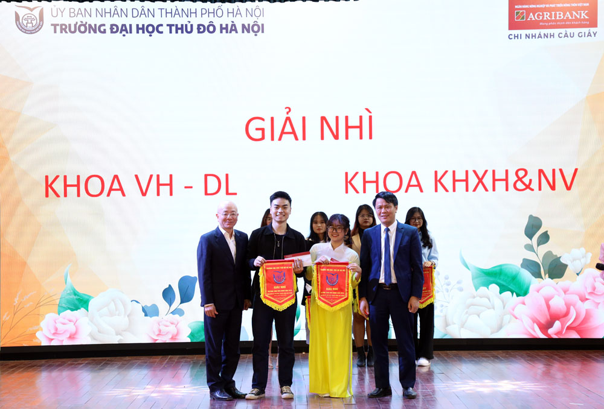
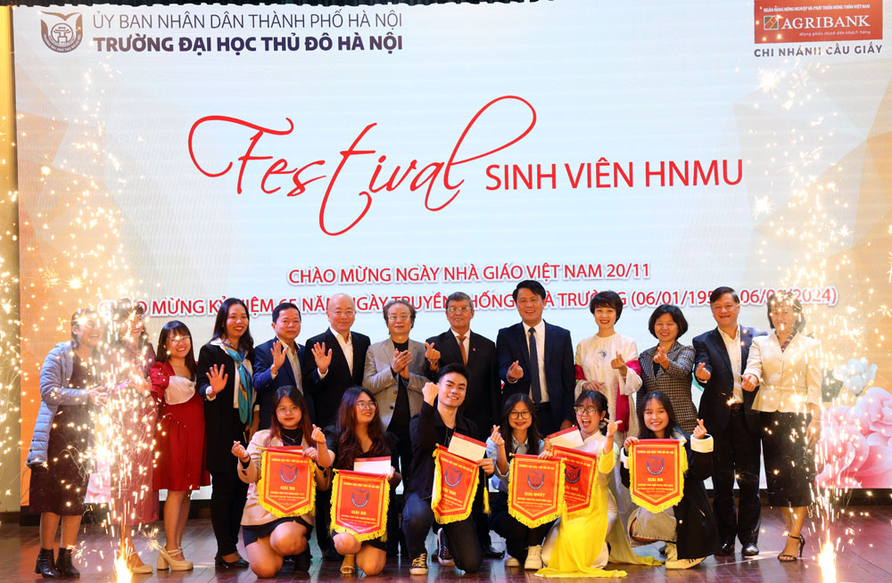

Sáng 18/11, Festival sinh viên HNMU năm 2023 đã được tổ chức với chủ đề “Tự hào Trường Đại học Thủ đô Hà Nội - Nơi chắp cánh ước mơ”. Đây là một trong chuỗi các hoạt động chào mừng 65 năm ngày Truyền thống Nhà trường (6/1/1959 – 6/1/2024); 10 năm ngày Thành lập Trường Đại học Thủ đô Hà Nội (31/12/2014 - 31/12/2024).
Các khách mời đồng thời là Ban Giám khảo
Dự Festival, về phía khách mời có NSND. Đỗ Tiến Định, nguyên Giám đốc Nhà hát Ca múa nhạc Việt Nam; TS. Phạm Trí Thành, Chủ tịch Hội đồng trường, Trường Đại học Sân khấu điện ảnh Hà Nội; NSƯT. Đỗ Thu Hằng, Học viện múa Việt Nam; ThS. Lại Hồng Đăng, Phó Giám đốc Cung Thanh niên Hà Nội; NSND Phan Muôn, nguyên Trưởng đoàn Ca nhạc, Đài tiếng nói Việt Nam; ông Trần Thế Anh, Phó Trưởng phòng Phòng phát triển kĩ năng, Trung tâm Dịch vụ việc làm và Hỗ trợ Thanh thiếu niên Hà Nội; Thầy Trần Minh Cường, khoa Kỹ năng trường Lê Duẩn - Thành đoàn Hà Nội; cô Đỗ Bích Hạnh, Học viện Múa Việt Nam …. Về phía Trường Đại học Thủ đô Hà Nội có PGS. TS. Nguyễn Vũ Bích Hiền, Hiệu trưởng Nhà trường; TS. Nguyễn Văn Tuân, Phó Hiệu trưởng cùng lãnh đạo, cán bộ, giảng viên, sinh viên các khoa và đơn vị trong toàn trường.
PGS. TS. Nguyễn Vũ Bích Hiền, Hiệu trưởng trường Trường Đại học Thủ đô Hà Nội phát biểu khai mạc Festival HNMU 2023
Phát biểu tại Chương trình Festival sinh viên HNMU 2023, PGS. TS. Nguyễn Vũ Bích Hiền, Hiệu trưởng trường Trường Đại học Thủ đô Hà Nội nhấn mạnh, tiếp lửa truyền thống 65 năm xây dựng và phát triển, Trường Đại học Thủ đô Hà Nội ngày hôm nay đã khẳng định được nội lực và tiềm năng của Nhà trường trong việc thực hiện sứ mạng kết nối, phát huy truyền thống của Thủ đô Hà Nội ngàn năm văn hiến và xây dựng trường thành một địa chỉ đào tạo có uy tín của Thủ đô và cả nước.
Nhìn lại chặng đường đã qua, thầy và trò Nhà trường tự hào về những gì đã đạt được. Chặng đường đó đã nở hoa và tạo nên một truyền thống tốt đẹp, tạo nên giá trị văn hóa cho Đại học Thủ đô Hà Nội và xây nền móng vững chắc để tự tin vững bước trong thời gian tiếp theo.
Chương trình Festival sinh viên HNMU 2023 chính là món quà tinh thần to lớn, thể hiện sức trẻ, sự nhiệt huyết của tuổi trẻ thể hiện khát vọng, tình yêu, lòng trân trọng, tự hào đối với các thế hệ của Nhà trường. Đây là hoạt động được tổ chức thường niên của Nhà trường, trở thành sân chơi lành mạnh, góp phần vun đắp niềm đam mê nghệ thuật, tình yêu quê hương đất nước, con người và mái trường cho sinh viên. Đồng thời, đây cũng là dịp thể hiện năng lực nghiệp vụ ngành và tài năng, giúp sinh viên thêm vững vàng về nghiệp vụ cũng như các hoạt động xã hội, chuẩn bị hành trang khi đi làm.
Tham dự Festival có 8 đội thi. Các đội thi trải qua 3 nội dung: “Lời chào sinh viên”, “Tài năng sinh viên” (tại hội trường) và “Nhảy dân vũ” (tại sân khấu ngoài trời). Trong đó, phần thi “Lời chào sinh viên” diễn ra trong khoảng thời gian từ 5-7 phút, nêu lên được tên đơn vị, các ngành đào tạo, những hoạt động nổi bật và thông điệp của khoa đào tạo. Phần thi này khuyến khích sử dụng công nghệ thông tin vào việc thực hiện chương trình. Với trí tưởng tượng phong phú, thông minh, sáng tạo và dí dỏm, các đội đã khéo léo giới thiệu thông tin về khoa và các mã ngành đào tạo đồng thời mang đến những tiếng cười sảng khoái và thú vị cho người xem.
Một số hình ảnh của các đội thi
Phần thi “Tài năng sinh viên”, các đội thi đã lựa chọn nhiều tiết mục biểu diễn mang tính nghệ thuật, sáng tạo phong phú, có bố cục hợp lý, kịch bản xuyên suốt, trang phục phù hợp. Thể hiện được công tác nghiệp vụ của ngành đang đào tạo trong khoa đồng thời có thể lồng ghép các kỹ năng mềm và những tài năng của sinh viên. Nội dung của phần thi này thể hiện tình cảm tri ân đối với thầy cô, mái trường mang tên Đại học Thủ đô Hà Nội và những khát vọng, hoài bão cũng như những thành tích của sinh viên, của đơn vị đào tạo.
Khuấy động sân khấu ngoài trời chính là phần thi “Nhảy dân vũ” với chủ đề “Tôi yêu Hà Nội”. Các đội thi biểu diễn màn nhảy dân vũ (truyền thống hoặc hiện đại) trên nền nhạc ca khúc về Hà Nội có nội dung thể hiện tình yêu, niềm tự hào đối với Thủ đô Hà Nội cùng với những khát vọng, mong muốn và hành động vì một Thủ đô Anh hùng - Thành phố vì hòa bình.
Ban tổ chức trao giải Nhất cho khoa Sư phạm
Trao giải Nhì: khoa Khoa học Xã hội và Nhân văn, khoa Văn hóa - Du lịch
Trao giải Ba cho 5 đội thi
Chung cuộc, về giải Toàn đoàn, Ban tổ chức đã trao giải Nhất cho khoa Sư phạm; giải Nhì: khoa Khoa học Xã hội và Nhân văn, khoa Văn hóa - Du lịch; giải Ba: khoa Kinh tế và Đô thị; khoa Khoa học Tự nhiên và Công nghệ; khoa Ngoại ngữ, khoa Khoa học Thể thao và Sức khoẻ; Trung tâm Phát triển nghề nghiệp trên cơ sở cộng tổng số điểm các đội đạt được ở tất cả các nội dung thi.
Ngọc Hinh - Ngọc Vinh